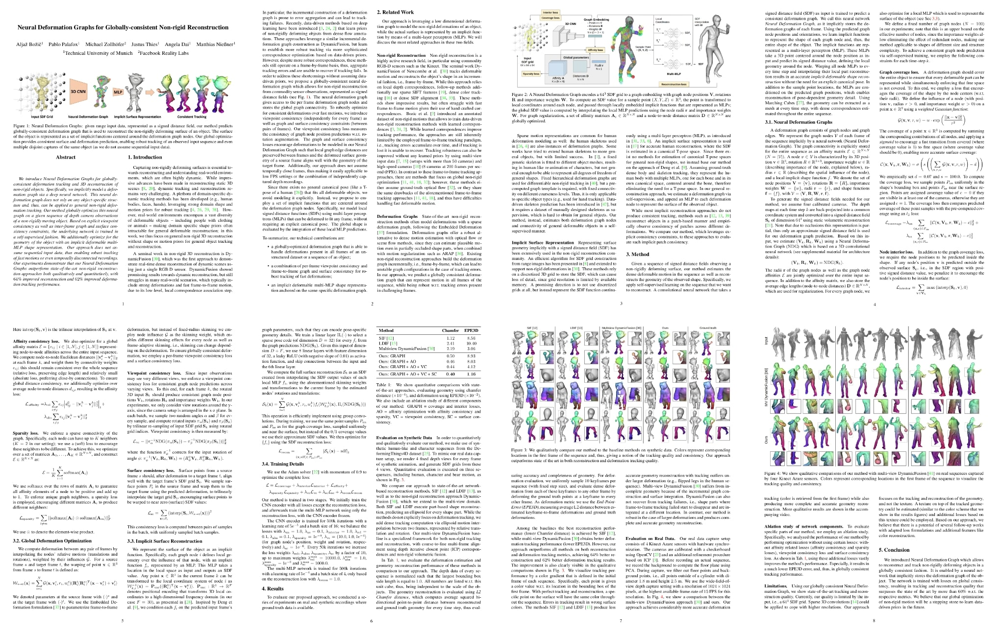

Neural Deformation Graphs
for Globally-consistent Non-rigid Reconstruction
1Technical University of Munich 2Facebook Reality Labs
Video
Abstract

We introduce Neural Deformation Graphs for globally-consistent deformation tracking and 3D reconstruction of non-rigid objects. Specifically, we implicitly model a deformation graph via a deep neural network. This neural deformation graph does not rely on any object-specific structure and, thus, can be applied to general non-rigid deformation tracking. Our method globally optimizes this neural graph on a given sequence of depth camera observations of a non-rigidly moving object. Based on explicit viewpoint consistency as well as inter-frame graph and surface consistency constraints, the underlying network is trained in a self-supervised fashion. We additionally optimize for the geometry of the object with an implicit deformable multi-MLP shape representation. Our approach does not assume sequential input data, thus enabling robust tracking of fast motions or even temporally disconnected recordings. Our experiments demonstrate that our Neural Deformation Graphs outperform state-of-the-art non-rigid reconstruction approaches both qualitatively and quantitatively, with 64% improved reconstruction and 62% improved deformation tracking performance.
Publication
 If you find our project useful, please consider citing us:
@article{bozic2020neuraldeformationgraphs,
title={Neural Deformation Graphs for Globally-consistent Non-rigid Reconstruction},
author={Bo{\v{z}}i{\v{c}}, Alja{\v{z}} and Palafox, Pablo and Zollh{\"o}fer, Michael and Dai, Angela and Thies, Justus and Nie{\ss}ner, Matthias},
journal={arXiv preprint arXiv:2012.01451},
year={2020}
}